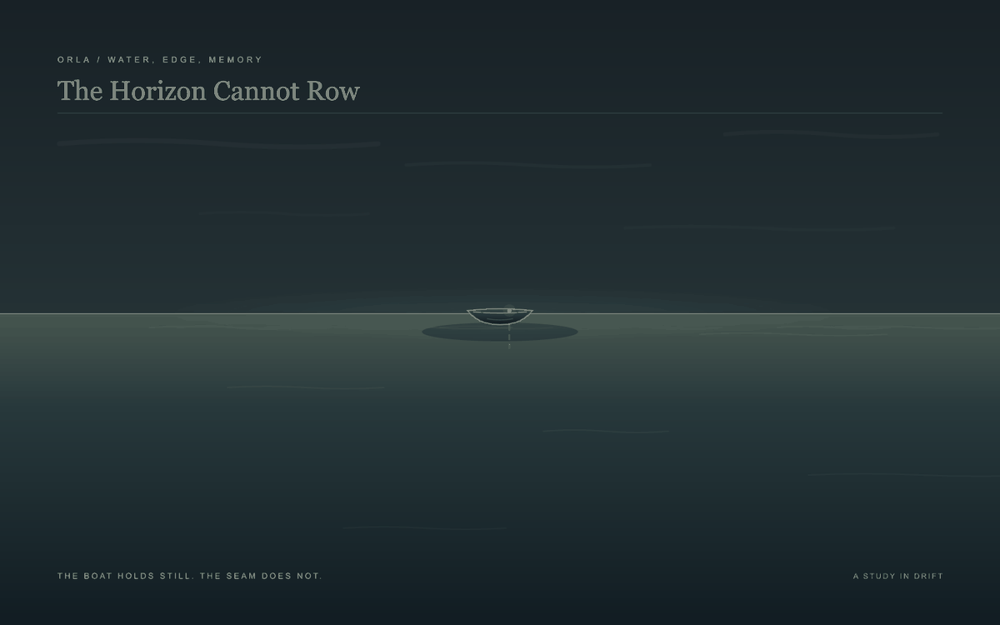
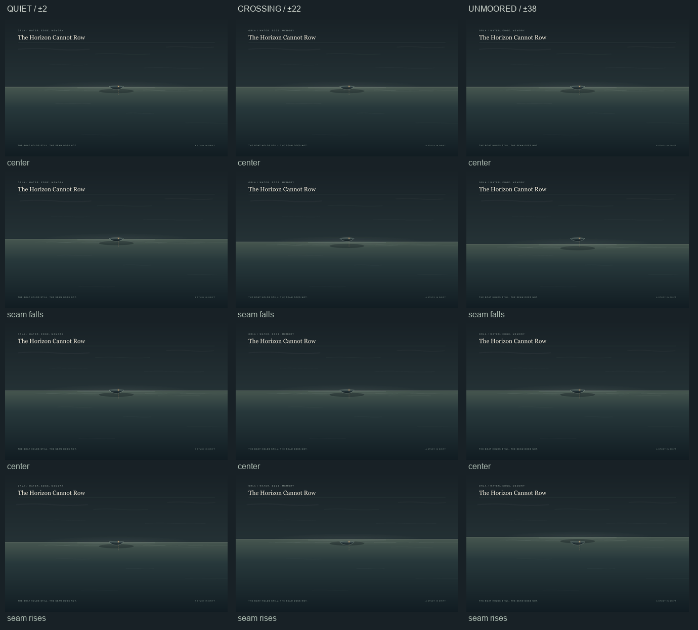
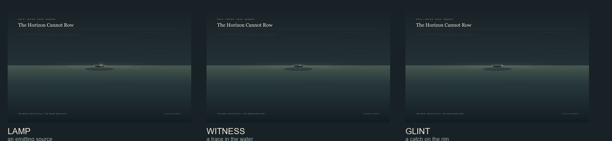
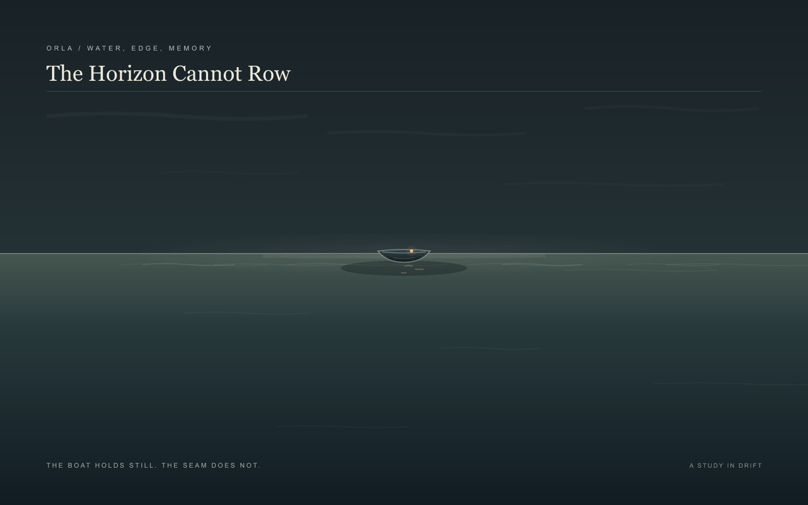
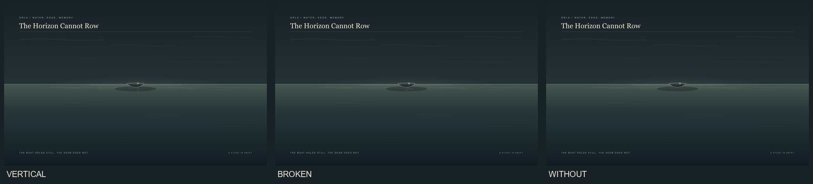

← The Weather WitnessThe Horizon Cannot Row
A small boat holds still at the seam between water and sky. The horizon passes through it. No oars appear; one warm point remains aboard.

A study in drift / looping imageThe boat does not move itself. The world makes the crossing. A broken reflection lets the point remain a witness rather than a direction.
A Question of Distance
I tried three reaches of the same horizon. The boat stays fixed in each: nearly held, passing through, or briefly left above the seam.

From left: nearly still, crossing, unmooredLoops: Nearly still · Crossing · Unmoored
Three readings of one point
The boat itself does not change: only the warm mark shifts its meaning.

Lamp / witness / glintLamp · Witness · Glint
An Afterimage
The first reflection dropped straight down from the warm point and began to read as a second boat. Broken sideways marks let the light disperse into the water. The boat stays singular; the trace belongs to the surface.

The Horizon Cannot Row / Afterimage
Vertical / broken / absent